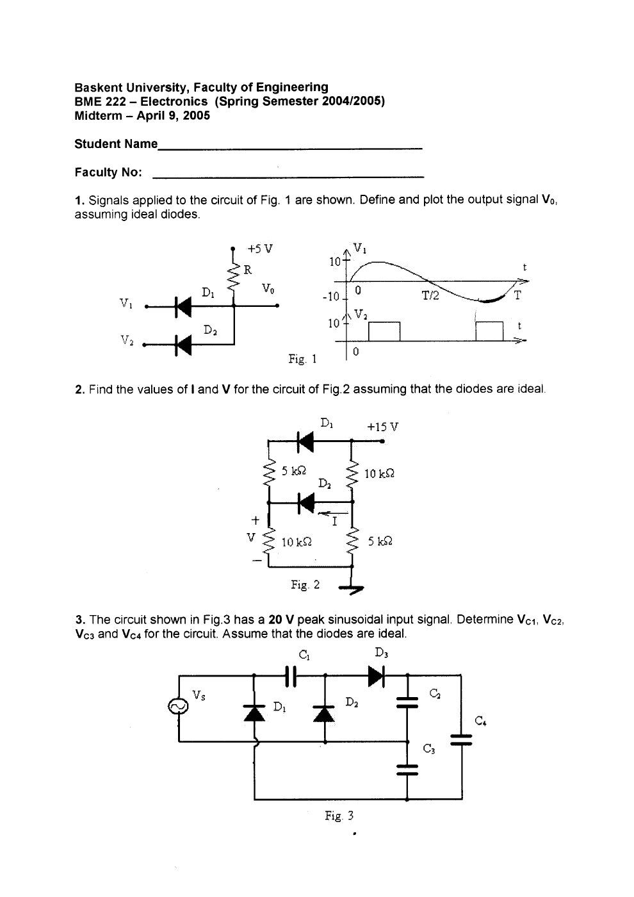
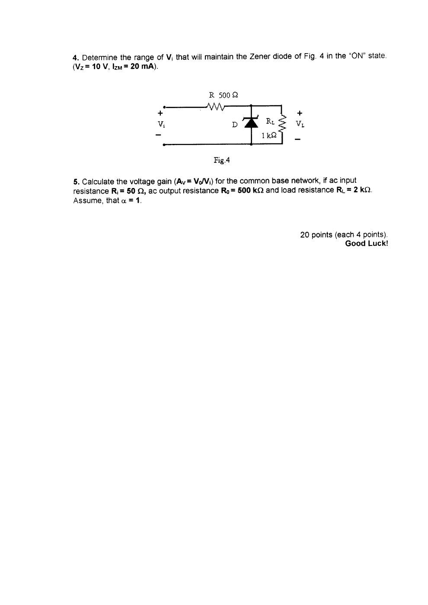
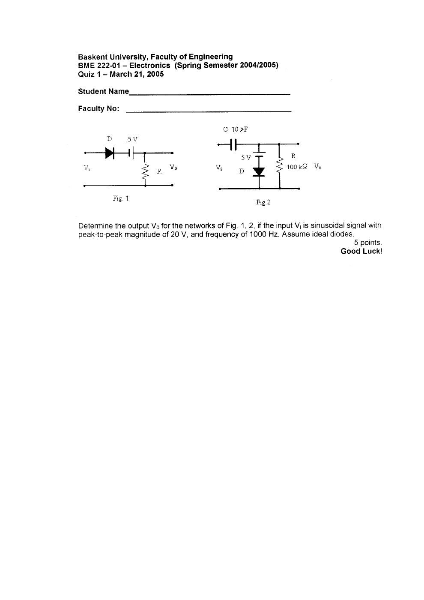
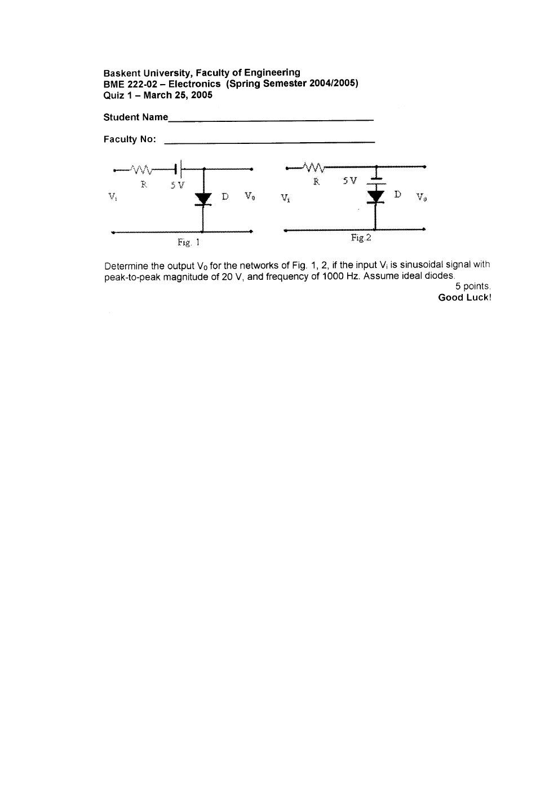
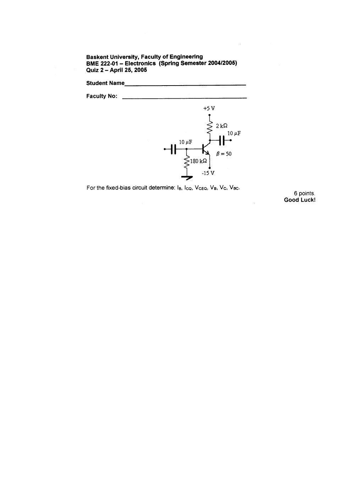
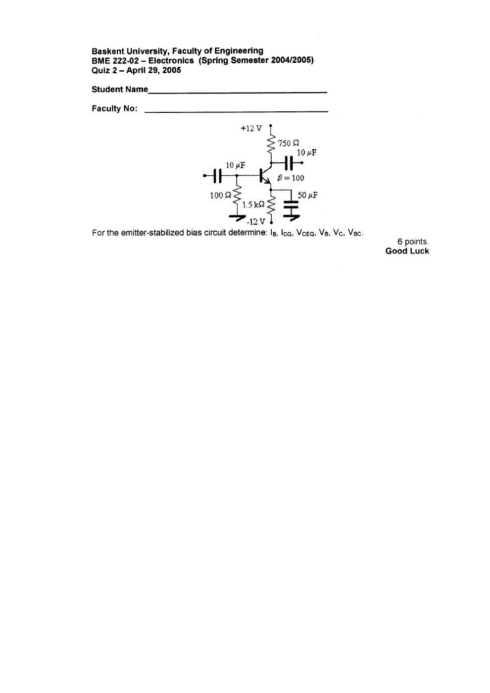
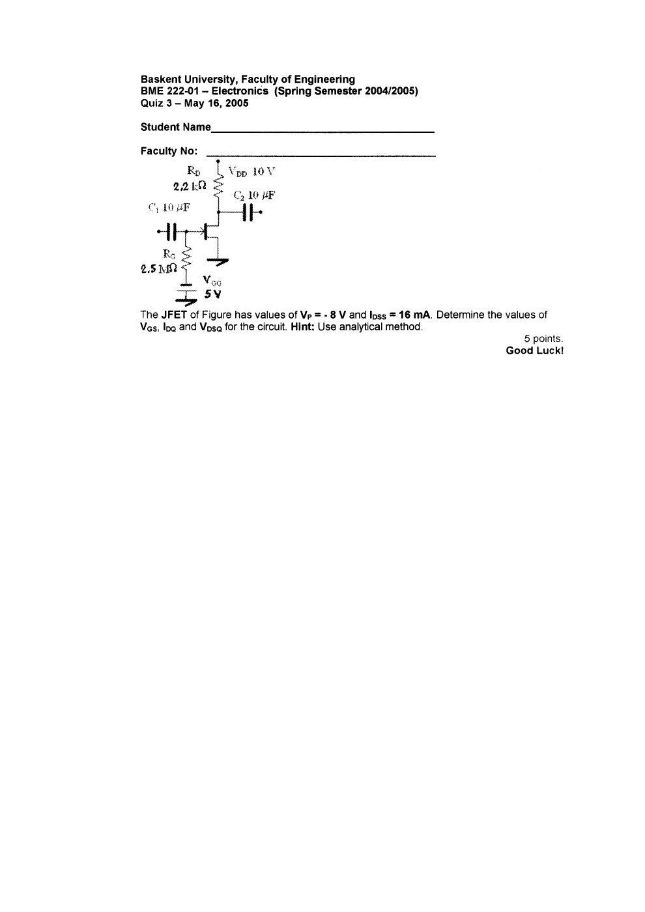
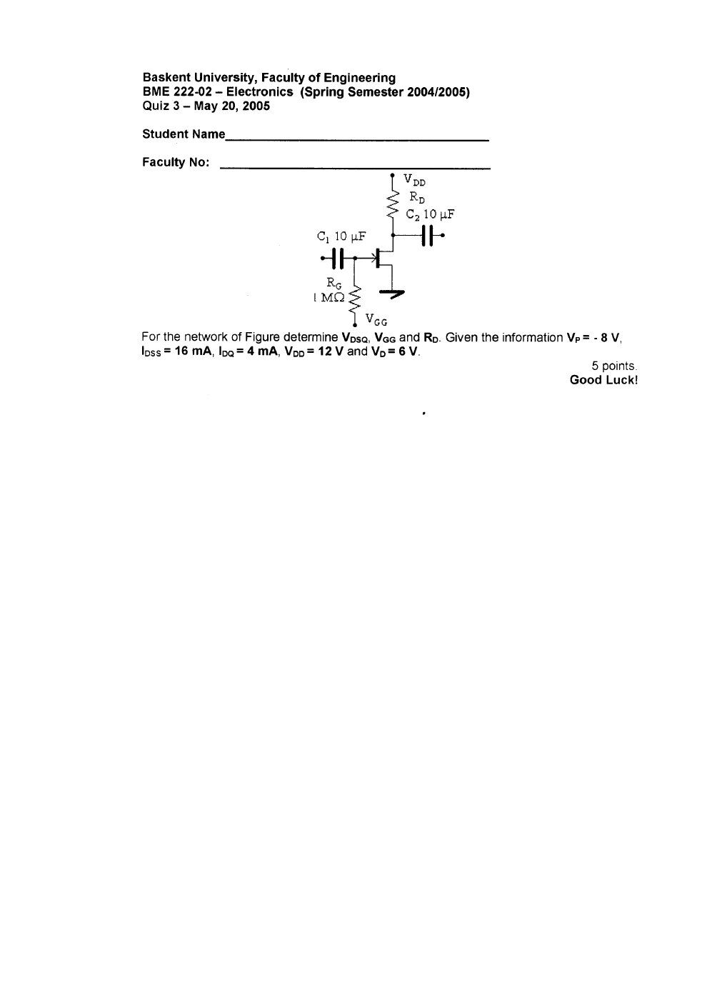

· EEM214
EEM214 Elektronik I: BME222 Elektronik Sınavları ve Çözümleri (Başkent Üniversitesi, 2005)
EEM214 – Elektronik I · 20.05.2005 · 18.10.2026
Bu yazı, EEM214 Elektronik I klasöründe saklanan, Başkent Üniversitesi BME222 Electronics dersinin 2004–2005 bahar dönemine ait ara sınavını ve iki şubenin üçer quizini içeriyor. Hazırlayan adı belirtilmemiş; belgelerde 21 Mart–20 Mayıs 2005 tarihleri bulunuyor. Taranmış soru ve el yazısı çözüm sayfaları metne aktarıldı; yedi PDF yazının sonunda ZIP olarak indirilebilir. Belgelerin ders kodu BME222’dir; EEM214 altında bulunmalarının nedeni kaynak klasörüdür.
Bu içerik üçüncü taraf bir kaynağa aittir; arşiv ve nostalji amacıyla kaynak belirtilerek paylaşılmıştır. Hak sahibinin talebi hâlinde kaldırılır.
Ara sınav — 9 Nisan 2005
Beş soru vardır; her biri 20 puandır. Diyotlar ideal kabul edilmiştir.

Soru 1: İki diyotlu devrede çıkış
5 V’a dirençle bağlı çıkış düğümü, iki diyot üzerinden V₁ ve V₂ girişlerine bağlanır. V₁, ±10 V sinüstür; V₂ ise 0–10 V arasında değişen dikdörtgen işarettir. İstenen V_o(t) dalga şeklidir.
Çözüm grafiğinde çıkış, girişlerden küçük olanın ve 5 V besleme sınırının etkisiyle belirlenir:
V_o(t) = min[5 V, V₁(t), V₂(t)].
V₂ = 0 iken pozitif giriş kısımları 0 V’ta sınırlanır; V₂ = 10 V iken çıkışın üst sınırı 5 V olur. V₁’in negatif kısmı çıkışa geçer.
Soru 2: I ve V
15 V beslemeli, iki diyot ve 5 kΩ–10 kΩ dirençlerden oluşan devrede I ve V istenir. Çözümde D₁ iletimde, D₂ kesimdedir. Sol koldaki gerilim bölücü:
V = 15 × 10/(5 + 10) = 10 V.
Sağ alt 5 kΩ üzerinde de 10 V bulunduğundan D₂ üzerinde iletim oluşturacak gerilim yoktur; I = 0 A sonucu verilir.
Soru 3: Gerilim üçleyici
Giriş sinüsünün tepe değeri V_m = 20 V’tur. İdeal diyotlarla C₁, C₂, C₃ ve toplam C₄ gerilimleri istenir. Çözüm:
- C₁ ve C₃ ayrı yarım periyotlarda V_m = 20 V’a şarj olur.
- C₂, D₃ üzerinden 2V_m = 40 V’a şarj olur.
- C₂ ve C₃ seri birleşiminin C₄ üzerindeki çıkışı V_C4 = 3V_m = 60 V’tur.
Soru 4: Zenerin çalıştığı giriş aralığı
R = 500 Ω, R_L = 1 kΩ, V_Z = 10 V ve I_ZM = 20 mA. Alt sınırda I_Z = 0:
V_i,min = [(R_L + R)/R_L]V_Z = 15 V.
Yük akımı I_L = 10 V/1 kΩ = 10 mA. Üst sınırda I_R,max = I_ZM + I_L = 30 mA:
V_i,max = I_R,max R + V_Z = 25 V.
Dolayısıyla ideal modelde sınır değerleri 15–25 V’tur; tam iletim için alt sınırın üstünde kalınır.
Soru 5: Ortak bazlı yükseltecin kazancı
Verilenler: R_i = 50 Ω, R_o = 500 kΩ, R_L = 2 kΩ, α = 1. Çözüm, R_o’nun yüke göre büyük olmasını kullanarak:
I_i = V_i/50, I_o ≈ I_i, V_o ≈ I_o R_L = 40V_i, A_v ≈ +40.
Not: Çözüm R_o = 500 kΩ’yu ihmal ediyor. Sonlu çıkış direnci hesaba katılırsa A_v = α(R_o ∥ R_L)/R_i ≈ 39.84 olur.

Quiz 1 — Diyotlu kırpıcı ve kenetleyiciler
Her şubenin sorusu 5 puandır. Giriş 20 V tepeden tepeye, 1 kHz sinüs; diyotlar idealdir.
BME222-01 — 21 Mart 2005
İlk devre seri diyot, 5 V kaynak ve yük direncinden oluşur. Geçiş seviyesi V_i = −5 V’tur. Çözümde V_i = 0 için V_o = 5 V, V_i = 10 V için V_o = 15 V bulunur. Çıkışın alt kısmı sıfırda sınırlanır:
V_o = max(0, V_i + 5 V).
İkinci devrede C = 10 µF, R = 100 kΩ ve 5 V öngerilim vardır. Zaman sabiti τ = RC = 1 s, işaret periyodu T = 1 ms’dir. τ ≫ T olduğundan kondansatör gerilimi yaklaşık korunur. Pozitif tepede C, 5 V’a şarj olur; çıkış +5 V ile −15 V arasında salınır.

BME222-02 — 25 Mart 2005
Birinci devrede seri direnç ve 5 V kaynak sonrası diyot çıkışı sıfıra sınırlar. Geçiş V_i = −5 V; negatif tepede V_o = −5 V’tur. İkinci devrede seri dirençten sonraki çıkış, 5 V kaynak ve diyot koluyla −5 V seviyesinde kırpılır. Çözümün dalga şekilleri sırasıyla:
- Şekil 1: V_o = min(0, V_i + 5 V).
- Şekil 2: V_o = min(−5 V, V_i).

Quiz 2 — BJT DC analizi
Her soru 6 puandır; I_B, I_CQ, V_CEQ, V_B, V_C ve V_BC istenir. DC analizinde kuplaj ve by-pass kondansatörleri açık devredir.
BME222-01 — 25 Nisan 2005
Devre: kolektör +5 V’a 2 kΩ üzerinden, emetör −15 V’a, baz toprağa 180 kΩ üzerinden bağlıdır; β = 50. Çözüm V_BE = 0.7 V alır:
- I_B = (15 − 0.7)/180 kΩ ≈ 79 µA.
- I_CQ = βI_B ≈ 3.95 mA.
- V_CEQ = 20 − I_CQ·2 kΩ = 12.1 V.
- V_B = −I_B·180 kΩ = −14.22 V.
- V_C = −15 + 12.1 = −2.9 V.
- V_BC = V_B − V_C = −11.32 V.
Not: Bunlar çözümdeki yuvarlatılmış değerlerdir. Ara adımlarda yuvarlama yapılmazsa I_B ≈ 79.44 µA, I_C ≈ 3.972 mA, V_B = −14.3 V ve V_C ≈ −2.944 V elde edilir.

BME222-02 — 29 Nisan 2005
Devre: +12/−12 V besleme, R_C = 750 Ω, R_E = 1.5 kΩ, R_B = 100 Ω ve β = 100. Çözüm:
I_B = (12 − 0.7)/[100 + 101·1500] ≈ 74.5 µA.
- V_B = −I_B R_B = −7.45 mV.
- I_CQ = βI_B = 7.45 mA.
- I_E ≈ I_C yaklaşımıyla V_CEQ = 24 − I_C(R_C + R_E) = 7.24 V.
- V_C = 12 − I_CR_C = 6.41 V.
- V_BC ≈ −6.42 V.
Not: Çözümün V_CE adımında I_E ≈ I_C yaklaşımı kullanılmıştır. I_E = (β + 1)I_B ile ve ara yuvarlama yapmadan V_CE yaklaşık 7.15 V bulunur.

Quiz 3 — JFET çalışma noktası
Her soru 5 puandır. Temel bağıntı Shockley denklemidir:
I_D = I_DSS(1 − V_GS/V_P)².
BME222-01 — 16 Mayıs 2005
V_P = −8 V, I_DSS = 16 mA, V_DD = 10 V, R_D = 2.2 kΩ, R_G = 2.5 MΩ ve V_GG = 5 V. Kapı akımı sıfır kabul edildiğinden:
- V_GSQ = −V_GG = −5 V.
- I_DQ = 16 mA·[1 − (−5)/(−8)]² = 2.25 mA.
- V_DSQ = 10 − 2.25 mA·2.2 kΩ = 5.05 V.

BME222-02 — 20 Mayıs 2005
Verilenler V_P = −8 V, I_DSS = 16 mA, I_DQ = 4 mA, V_DD = 12 V ve V_D = 6 V. V_DSQ, V_GG ve R_D istenir.
- V_GS = V_P[1 − √(I_D/I_DSS)] = −4 V.
- V_GG = 4 V.
- Kaynak topraklı olduğundan V_DSQ = 6 V.
- R_D = (12 − 6)/4 mA = 1.5 kΩ.
